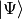
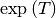
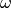

FourierPropagator¶
About the FourierPropagator class¶
The WaveBlocks Project
@author: R. Bourquin @copyright: Copyright (C) 2010, 2011, 2012 R. Bourquin @license: Modified BSD License
Inheritance diagram¶
Class documentation¶
- class WaveBlocks.FourierPropagator(potential, initial_values, para)¶
This class can numerically propagate given initial values  in a potential surface . The propagation is done with a Strang splitting of the time propagation operator.
- Psi = None¶
The initial values of the components
 sampled at the given nodes.
sampled at the given nodes.
- T = None¶
The kinetic operator
 defined in momentum space.
defined in momentum space.
- TE = None¶
Exponential  of
used in the Strang splitting.
- V = None¶
The potential operator
 defined in position space.
defined in position space.
- VE = None¶
Exponential of
used in the Strang splitting.
- get_number_components()¶
Returns: The number of components of .
- get_operators()¶
Returns: Return the numerical expressions of the propagation operators and .
- get_potential()¶
Returns: The MatrixPotential instance used for time propagation.
- get_wavefunction()¶
Returns: The WaveFunction instance that stores the current wavefunction data.
- kinetic_energy(summed=False)¶
This method just delegates the calculation of kinetic energies to the embedded WaveFunction object.
Parameters: summed – Whether to sum up the kinetic energies of the individual components. Returns: The kinetic energies.
- nodes = None¶
The position space nodes
 .
.
- omega = None¶
The momentum space nodes .
- potential = None¶
The embedded MatrixPotential instance representing the potential
.
- potential_energy(summed=False)¶
This method just delegates the calculation of potential energies to the embedded WaveFunction object.
Parameters: summed – Whether to sum up the potential energies of the individual components. Returns: The potential energies.
- propagate()¶
Given the wavefunction values
 at time
at time  , calculate new
values at time
, calculate new
values at time  . We perform exactly one timestep
. We perform exactly one timestep  here.
here.